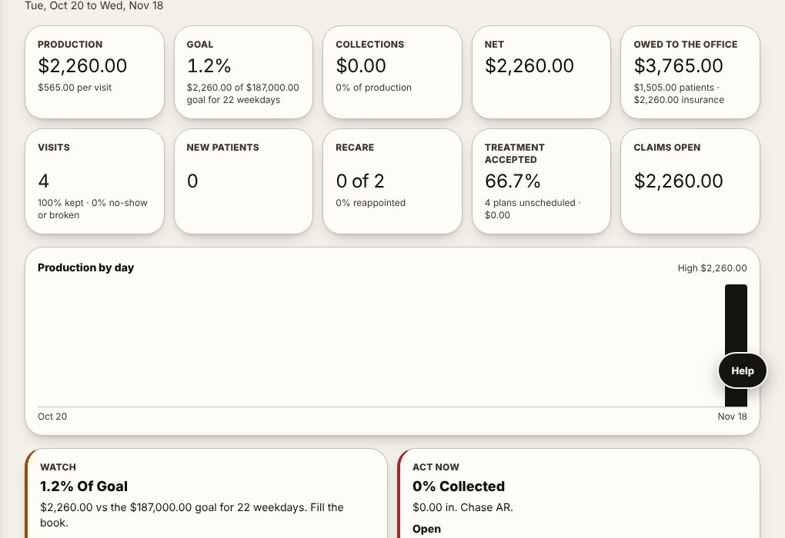
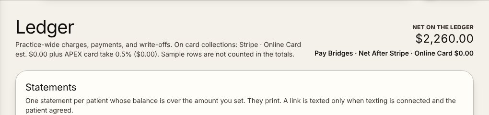
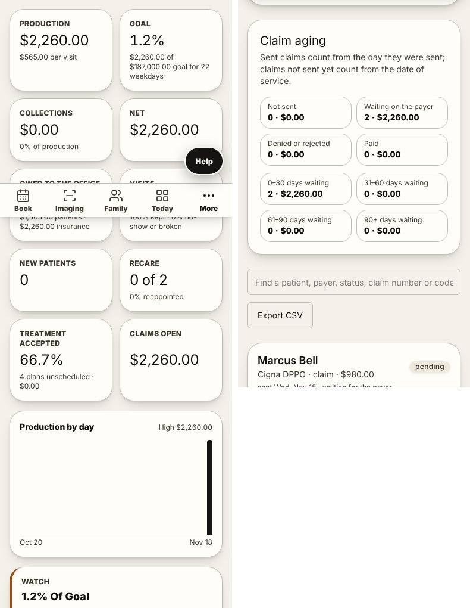
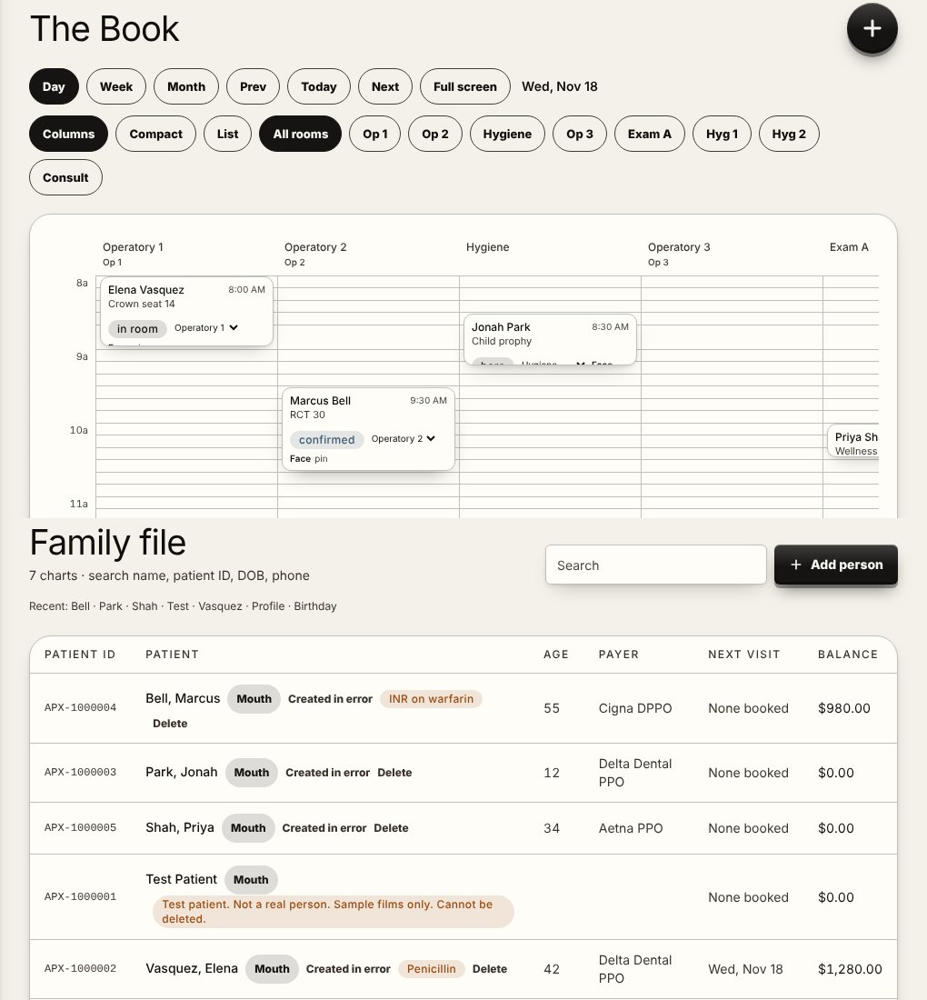
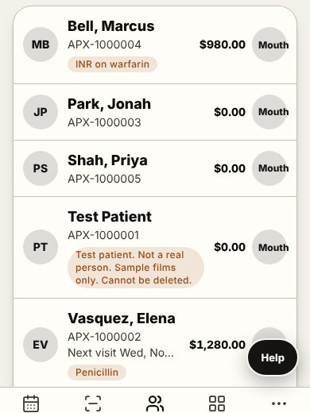
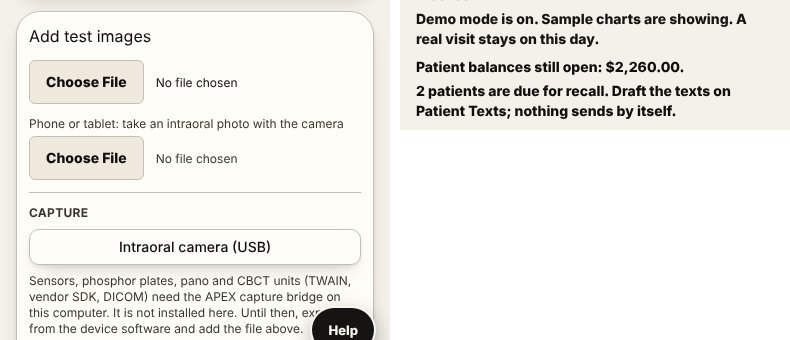

APEX design pass, Nov 18: white space, hierarchy, alignment
Reports, Ledger and Claims graded on laptop and phone (sample office, no real patient data). Add/fix only; nothing removed. Earlier screens: apex-1113/screens.
1. Reports: numbers line up across a row; chart bars are flat
Before, “Treatment accepted” wrapped to two lines and pushed its number lower than its neighbours, and bars looked like 3D buttons.

2. Ledger: the total is labelled and aligned
Before, the big total had no label and sat indented under the intro text.

3. Phone: Reports tiles and claim aging two-across

4. Book and family file (second pass)
Book: a short visit card now opens on hover or keyboard focus to show its controls (Marcus Bell’s card shown open), the status chip stays on one line, and selected tabs use the theme colour like every other screen (they were a hard-coded green). Family file: “Add person”, patient IDs and headers stay on one line.

5. Family file on a phone: next visit on its own line

6. Imaging file buttons and Home money format (third pass)
Left: the Imaging file buttons are now full-size (44 px) in the app's button style. Right: Home's open-balance line now shows the thousands comma like every other screen.
